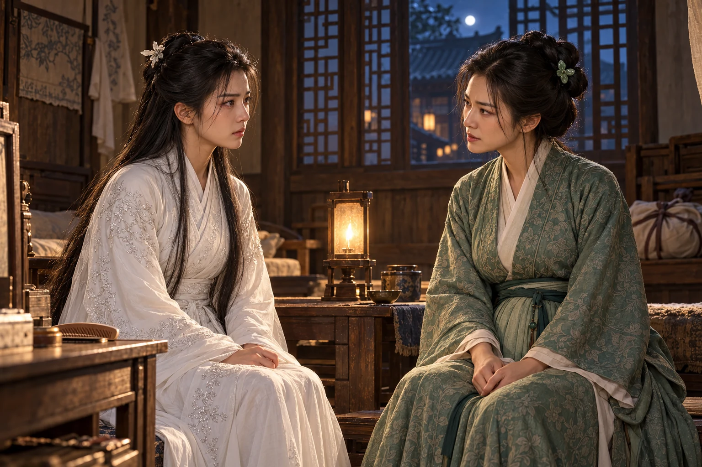
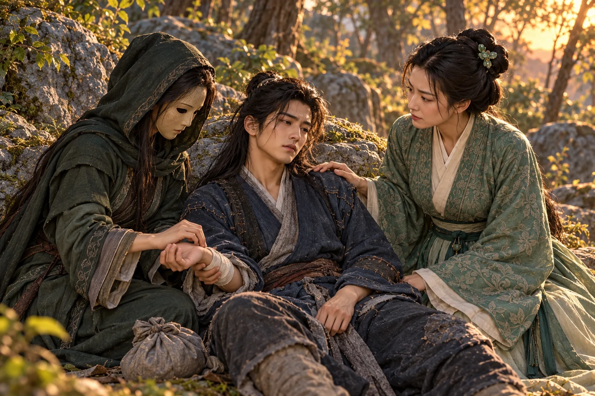

Di luar kediaman Lu, baru melepaskan napas ketika suara pertemuan tertinggal di balik pepohonan. masih menggenggam tangannya. Ia berjalan di sisi yang tidak terluka, seolah telah memilih tempat itu untuk selamanya.
“Paman belum membenci aku,” kata Dani setelah beberapa lama. “Itulah yang membuatku lebih sulit meninggalkannya.”
Xiaolongnü menoleh hanya untuk memastikan Dani masih berjalan di sisinya. Suara orang-orang di belakang tidak membuatnya ingin kembali. Sesudah lama mencarinya, kini ia bisa menyentuh lengan Dani setiap kali menghendaki; kegembiraan sederhana itu belum sanggup dikalahkan oleh kemarahan orang asing.
Dani berhenti untuk merapikan sehelai rambut yang tersangkut di kerah putihnya. “Bibi memegang tanganku seerat ini, Paman tak mungkin membawaku kembali meskipun mengejar sampai ke sini.” Ia tersenyum ketika Xiaolongnü justru mengeratkan genggamannya.
“Kalau mereka masih marah, biarkan saja,” kata Xiaolongnü. Ia mengayunkan sedikit tangan mereka yang bertaut. “Kita kembali ke makam. Di sana tidak ada yang menyuruhmu melepaskan tanganku.”
Ia mengatakannya dengan kelegaan yang membuat Dani tersenyum. Makam berarti pintu yang dapat mereka tutup, pekerjaan yang mereka kenal, dan pagi tanpa orang asing menimbang kepantasan cinta mereka. Sesudah perjalanan panjang, Dani pun merindukan ketenangan itu.
“Untuk sementara, tentu. Sesudah tanganku pulih, kita dapat turun bersama. Aku ingin menunjukkan tempat-tempat yang kulalui ketika mencarimu.”
Xiaolongnü menatap jalan di depan mereka. “Apakah engkau tidak betah bila tinggal di sana terus?”
“Aku senang tinggal bersamamu. Tetapi melihat dunia bersamamu juga menyenangkan. Dulu aku keluar sendirian; sekarang kita tidak perlu berpisah untuk melakukannya.”
Xiaolongnü mengangguk, meski bagian pertama jawaban itu tinggal lebih lama di hatinya daripada bagian terakhir. Ia sudah menemukan kembali satu-satunya orang yang ingin ditemaninya. Dani telah menemukan dirinya, tetapi masih mempunyai dunia lain yang ingin dilihat.
Di kediaman Lu, mendengar seorang tamu memuji kesetiaan perempuan . Ia meninggalkan serambi sebelum orang itu selesai bicara. Pujian itu membuat telinganya panas. Dani menolaknya di hadapan banyak orang, tetapi perempuan yang dipilihnya malah dikagumi. Fu ingin menyusul mereka dan menuntut jawaban, terlalu marah untuk mengakui kecemburuannya.
“Fu, engkau hendak ke mana?” menyusulnya ke kandang.
“Keluar. Apakah itu pun harus mendapat izinmu?”
tiba dari halaman. “Guru sedang menenangkan para tetua. Jangan membuat beliau mencarimu.”
“Aku tidak hendak membuat kerusuhan. Aku hanya ingin bertanya kepada apakah sejak kecil dia menganggap kita semua bahan permainannya.” Guo Fu menarik tali pelana terlalu keras. “Kalau kalian takut bertemu perempuan itu, jangan ikut.”
Sebenarnya ia belum tahu apa yang akan dikatakannya. Ia membayangkan Dani menoleh, melihatnya datang, lalu menyadari ada sesuatu yang telah disia-siakan. Keinginan itu membuat penolakan di aula terasa seperti penghinaan yang masih dapat dibalas.
Kedua Wu saling memandang. Kali ini Dunru tidak memperebutkan siapa yang boleh berada paling dekat. Ia menyuruh adiknya memberi tahu sementara dirinya mengikuti Fu. Xiuwen ingin membantah, tetapi kecemasan akan keselamatan Fu mengalahkan keinginannya untuk mendahului kakaknya.
Di tikungan sebelum kedai tepi jalan, seorang lelaki berkipas menghadang kuda mereka. tersenyum ketika mengenali putri . Kekalahan di aula telah membuatnya kehilangan muka; menemukan seseorang yang dapat dipakai gurunya merupakan kesempatan memulihkannya.
“Putri Pendekar Guo rupanya hendak mengantar kami.”
“Siapa yang mengantarmu? Minggir!” Guo Fu mengangkat cambuk ketika Huodu menyentuh kekangnya.
Kipas menutup. Pergelangan Fu terjepit sebelum cambuknya turun. Dunru mencabut pedang, tetapi bunyi roda logam dari samping membuat kudanya meringkik dan berputar. sudah berada di belakang gadis itu.
Fu berusaha menghantam sikunya. Dua jari menyentuh dekat bahunya; tenaga yang hendak dikerahkannya terputus. Ketika Dunru kembali menguasai tunggangan, Fu telah ditarik turun dan dijadikan penghalang di depan Jinlun.
“Pedangmu boleh terus maju,” kata Jinlun. “Tetapi putri gurumu berdiri lebih dekat kepadaku daripada engkau.”
Dunru menahan bilah. Satu keputusan yang terlambat telah membuat semua keberaniannya tidak berguna. Ia takut mencelakai Fu justru ketika hendak membuktikan bahwa dirinya mampu melindunginya.
Huang Rong datang bersama Xiuwen sesaat kemudian. Ia sempat melihat Fu meninggalkan halaman, lalu menerima kabar dari pemuda itu. Guo Jing masih menangani perselisihan para perguruan; membantu merawat orang yang terluka. Ia menyangka hanya perlu membawa anak-anak pulang sebelum kemarahan mereka menimbulkan perkara baru.
Kini Jinlun mempersilakannya masuk ke kedai dengan kesopanan seorang tuan rumah.
“Di sini kita dapat berbicara tanpa Guo Jing menyela.”
Huang Rong melihat darah kering di sudut bibirnya. Luka dari aula belum pulih. Namun napasnya sendiri mulai pendek setelah menunggang tergesa-gesa, dan Fu berada dalam jangkauan roda itu.
“Jika yang ingin Tuan bicarakan urusan persilatan, lepaskan anakku. Atau Tuan hanya berani mengundang seseorang dengan mengikat putrinya?”
Senyum Jinlun menipis. Ia memberi jalan menuju tangga, tetapi tangannya tidak meninggalkan bahu Fu.
dan berhenti di kedai yang sama untuk membeli bekal. Dari halaman ia mengenali kuda keluarga Guo, lalu mendengar suara dari lantai atas.
“Ibu, jangan menyerahkan tongkatmu kepadanya!”
Xiaolongnü melihat perubahan pada wajah Dani ketika suara keluarga Guo terdengar. Ia sendiri tidak merindukan orang-orang yang baru saja memarahi mereka. Namun ia mengenal wajah itu: Dani tidak akan bisa terus berjalan sambil membayangkan Paman dan terbunuh di belakangnya.
“Engkau ingin menolong mereka, bukan?” Xiaolongnü menghunus pedang. “Mari. Tetapi jangan pergi terlalu jauh dariku.”
Di atas, Huang Rong duduk dengan punggung lurus, tetapi telapak yang menekan pinggir meja tampak pucat. menjaga tangga; kedua Wu berdiri tanpa ruang untuk menyerang. Pedang tergeletak dekat tiang. Fu telah dilepaskan dari , namun masih menutup jalan keluarnya.
memandang pasangan yang muncul di ambang tangga. “Urusan kalian dengan keluarga Guo sudah selesai di aula. Teruskanlah perjalanan.”
Dani melihat mata Huang Rong bergerak ke arah jalan. Ia memahami maksudnya: carilah . Untuk sesaat itulah pilihan paling masuk akal. Lalu Jinlun mengulurkan tangan hendak menarik Huang Rong dari kursinya, dan tubuh perempuan itu goyah ketika mencoba menghindar.
Kalau aku pergi sekarang, apa yang tersisa untuk diselamatkan ketika Paman tiba?
Dani menyambar pedang Dunru. Ujungnya memburu lengan Jinlun, memaksanya melepaskan sasaran. Benturan roda membuat luka di pangkal ibu jari Dani terbuka kembali.
“Bibi Guo sedang sakit,” katanya. “Rupanya kemenangan yang kauinginkan harus menunggu lawan tak sanggup berdiri.”
“Engkau baru keluar dari rumah yang menolakmu. Mengapa buru-buru mati untuk mereka?”
“Karena mereka tidak pernah mengajariku meninggalkan keluarga di tangan penculik.”
Xiaolongnü melewati sisi Dani dengan pedang terhunus. “Jangan berbicara lagi kepadanya. Tangannya sudah bergerak.”
Roda menyapu. Dani menurunkan bilah untuk membelokkan sisi logam, sementara pedang Xiaolongnü menusuk ruang yang ditinggalkan siku lawan. Mereka memakai keselarasan yang ditemukan di aula; kali ini tujuannya membuka jalan keluar, bukan mempertahankan kursi pemimpin.
Jinlun tidak mengulangi cara yang sama. Ia mendesak ke arah tiang agar pasangan itu terpisah. mengikuti dengan langkah sempit, menutup bahu Dani sebelum roda dapat masuk. Bibir Jinlun mengeras. Setiap kali ia mengerahkan tenaga penuh, luka yang ditinggalkan Guo Jing terasa tertarik di dalam dadanya.
Huang Rong mengait kaki bangku dengan tongkat. Bangku itu meluncur menghalangi Huodu, dan kedua Wu segera menarik Fu ke tangga.
“Ibu Guru, cepatlah!” seru Dunru.
“Jaga jalan bagi mereka juga,” jawab . “Kalian hendak selamat dengan membiarkan orang yang menolong kita dikepung?”
kembali mengangkat pedang. menyusul, wajahnya merah. Di bawah tatapan Fu, mereka terpaksa melihat betapa kecil persaingan mereka dibandingkan pilihan yang baru dibuat Dani.
sendiri merebut poci dari meja dan melemparkannya ke arah yang hendak menyusul. Air panas memercik ke kipasnya. Keberanian gadis itu belum mempunyai ketenangan, tetapi kali ini ia mengarahkannya kepada musuh yang benar.
“Kalau ingin menangkapku lagi, kejar sendiri!” bentaknya.
Dani memotong tali tirai, menjatuhkan kain di antara roda dan wajahnya. Xiaolongnü menariknya melewati tangga. sempat mengangkat gada, lalu ragu ketika melihat pemuda yang disangkanya kelahiran kembali kakak seperguruannya. Keraguan pendek itu cukup. Mereka keluar sebelum Huodu berhasil merobek kain yang menutup jalan.
Di persimpangan berikutnya Huang Rong membawa mereka melewati halaman belakang rumah-rumah, kemudian menyusuri aliran dangkal untuk mengaburkan arah. tidak mengejar membabi buta. Ia telah melihat luka Dani, kelemahan Huang Rong, serta keberadaan Xiaolongnü yang membuat kedua hal itu sulit dimanfaatkan.
Mereka memperoleh kamar di penginapan kecil menjelang petang. Huang Rong menyuruh kedua Wu mengawasi jalan; Guo Fu diperintahkan mengganti pakaian basah. Dani mengembalikan pedang kepada Dunru sebelum duduk di ambang beranda.
“Bilahnya masih utuh,” kata Dani. “Sayang, tanganku yang harus ditambal lagi.”
Dunru menerimanya dengan wajah kaku. “Aku belum melupakan kebohonganmu.”
“Bagus. Kalau engkau mudah melupakannya, lain kali aku harus mencari kebohongan yang lebih besar agar kalian berhenti berkelahi.” Dani mengangkat wajah. “Tetapi yang tadi di kedai bukan permainan. Jaga Bibi Guo baik-baik.”
Dunru membuka mulut, lalu hanya mengangguk. Ucapan terima kasih terasa tersangkut bersama harga dirinya.
Guo Fu mendatangi setelah mengambil air. Ia berdiri cukup lama sampai pemuda itu menyingkirkan buntalan dari tempat duduk di sampingnya. Fu tetap berdiri. Ia ingin berterima kasih; mengucapkannya terasa seperti menyerahkan sisa harga dirinya kepada Dani.
“Aku tidak menyuruhmu datang menolong,” katanya.
“Aku mengenal suaramu, Fu. Bahkan di tengah keributan begitu masih terdengar jelas.” Dani menahan senyum ketika alisnya naik. “Untung kali ini kau tidak sedang memarahiku.”
“Aku akan membalas pertolonganmu. Jangan mengira dengan ini kau boleh menertawakanku lagi.”
Dani melihat bekas merah pada pergelangannya, dan senyumnya mereda. “Lain kali jangan mengejar orang yang membuatmu kesal sampai sejauh ini. Kau bisa terluka. pun tadi hampir tertangkap.”
“Aku tidak mengejarmu!” menjawab terlalu cepat. Matanya berpindah kepada Xiaolongnü yang kembali membawa baskom. “Dan aku tidak takut kepadanya.” Melihat perhatian Xiaolongnü, ia merasa tersisih bahkan sebelum perempuan itu berbicara.
Xiaolongnü memandangnya sebentar, lalu duduk di samping Dani. “Tanganmu belum selesai kubebat. Mengapa sudah digerakkan lagi?” Ia tidak menganggap tatapan Guo Fu sebagai tantangan. Luka di telapak Dani jauh lebih menyita perhatiannya.
Guo Fu berbalik. Ia ingin membenci kelembutan itu karena tidak menemukan kesombongan yang dapat dibalasnya. Dani tidak mengejarnya; dari belakang masih terdengar Xiaolongnü menegur pemuda itu agar berhenti menggerakkan jari.
Sesudah makan, Dani beristirahat di kamar dengan tangan yang sudah dibebat. Huang Rong menemui Xiaolongnü di ruang sebelah. Perempuan muda itu sedang merapikan rambutnya; mendengar Dani bersin di balik dinding, ia sempat tersenyum sebelum kembali memegang sisir.
“Aku belum sempat berterima kasih kepadamu dengan patut,” kata Huang Rong.
“Dani ingin kalian selamat. Aku pun begitu.” Xiaolongnü mengatakannya tanpa basa-basi, kemudian bertanya, “Bibi Guo, tadi mengapa semua orang marah ketika dia hendak menikah denganku?”
Huang Rong mengamati wajah yang sungguh-sungguh tidak mengerti itu. Xiaolongnü tidak sedang menantang adat untuk mencari kemenangan. Baginya, dua orang yang saling menyayangi tentu ingin tinggal bersama; kemarahan orang lain justru perkara yang sulit dipahami. Huang Rong teringat saat cintanya sendiri ditentang dahulu, tetapi ingatan itu tidak membuatnya berhenti.
“Karena engkau gurunya. Di luar makam, orang menganggap hubungan itu tidak patut berubah menjadi suami istri. Mereka akan mencela kalian ke mana pun kalian pergi.”
“Aku tidak mengenal mereka,” jawab Xiaolongnü. “Kalau mereka tidak menyukaiku, tidak mengapa. Dani menyukaiku.”
“Engkau mungkin tidak peduli,” ujar Huang Rong perlahan. “Tetapi bagaimana dengan ? Ia akan menjadi bahan hinaan sepanjang hidupnya. Orang dapat melupakan jasanya hari ini, lalu hanya mengingat bahwa ia menikahi gurunya sendiri.”
Sisir itu berhenti. dapat mengabaikan wajah-wajah asing yang membencinya. Namun ketika Huang Rong menyebut Dani hidup sampai tua dengan hinaan yang sama, ia teringat bekas kerah di leher pemuda itu dan tangan yang hampir memukulnya.
“Kalau begitu kami tinggal di makam saja,” katanya setelah berpikir. “Tidak usah bertemu mereka. Di sana Dani tidak pernah merasa malu kepadaku.”
“Engkau dibesarkan di sana. Dani mengenal keramaian sejak kecil. Maukah ia terus tinggal di dalam makam selama puluhan tahun?”
Xiaolongnü justru tersenyum, seakan menemukan jawaban bagi semua kekhawatiran itu. Dahulu Dani meninggalkan jalan keluar untuk kembali kepadanya; baru tadi ia pun menyatakan cinta di hadapan semua orang. Tentu ia akan senang tinggal bersama. melihat keyakinan tersebut dan tidak ikut tersenyum.
“Jangan hanya menanyakan apakah dia mencintaimu,” katanya. “Tanyakan apakah kelak dia tidak akan bosan. Kalau suatu hari ia ingin kembali ke luar, celaan itu tetap menunggunya.”
“Akan kutanyakan sekarang.” Xiaolongnü bangkit dengan hati yang masih ringan. “Dia pasti mau. Bibi Guo belum tahu, Dani paling senang kalau aku menemaninya.”
Huang Rong tidak menahannya. Ia tahu Dani menyayangi Xiaolongnü; ia juga tahu pemuda itu menyukai dunia yang lebih luas daripada dinding batu. Dengan membiarkan gadis itu membawa pertanyaan tersebut, Huang Rong berharap cinta yang tidak dapat dikalahkan oleh larangan akan digoyahkan oleh ketakutan menyusahkan orang yang dicintai.
Xiaolongnü masuk dan duduk di sisi pembaringan. Dani membuka mata, lalu bergeser untuk memberinya tempat. Ia masih tersenyum ketika gadis itu bertanya, “Dani, kalau kita kembali ke makam dan tinggal bersama selamanya, engkau mau?”
“Mengapa tidak? Asalkan Bibi tidak menyuruhku berlatih dari pagi sampai malam.” Dani menarik ujung lengan putihnya. “Kalau rambut kita sudah putih, apa Bibi masih akan memarahiku karena salah melangkah?”
“Kalau salah, tentu kubetulkan.” Xiaolongnü membayangkan rambut Dani memutih dan mendadak tertawa lirih. “Tetapi jangan sampai engkau tidak mengenaliku ketika aku sudah tua.”
“Kalau Bibi memanggil namaku, bagaimana mungkin aku keliru? Bahkan kalau gigimu sudah habis, aku tetap mendengarnya.” Dani menatap bibir yang masih tersenyum itu. “Kita tua bersama. Jangan seorang mendahului lalu menyuruh yang lain menunggu.”
Xiaolongnü menggenggam tangannya dengan kedua tangan. Jawaban itu membuat dadanya hangat. Ia ingin segera memberitahu Huang Rong bahwa kekhawatirannya tidak benar, tetapi Dani menguap dan merapatkan kepalanya ke bantal. Ia memilih tinggal sebentar lagi untuk mendengar napasnya.
Menjelang malam, dari halaman terdengar suara . Ia sedang berbicara kepada kakaknya, cukup jauh untuk mengira percakapan mereka tidak sampai ke kamar. “Sesudah ditolong Guru, ia masih mempermalukan beliau. Guru sendiri hendak dijadikannya istri!”
“Rendahkan suaramu,” kata . Namun ia tidak menyangkal adiknya. “Fu masih marah. Jangan membuatnya mendengar perkara itu lagi.”
ternyata sudah berada di serambi. “Dia baru menolong Ibu dan kalian. Sekarang mudah sekali kalian menghinanya.” Suaranya keras, lebih marah daripada yang dikehendakinya. Ia sendiri terluka oleh pilihan , tetapi tidak sudi kedua Wu memakai luka itu sebagai alasan merendahkannya.
Huang Rong memotong jawaban Xiuwen. “Sudah. Orang yang baru mempertaruhkan nyawa untuk kalian sedang beristirahat di dalam. Pergilah membantu menyiapkan keberangkatan.” Langkah-langkah menjauh. Bagi , yang tertinggal justru kata-kata yang tak sempat ditarik kembali.
Ia memandang Dani yang sudah terlelap. Sejak di aula ia hanya mendengar orang melarang mereka menikah. Kini bahkan orang yang baru ditolong Dani masih menganggapnya memalukan. Karena aku gurunya, pikir Xiaolongnü. Kalau dia tidak mengenalku, mereka tidak akan berkata begitu.
Saat diminta tidur bersama para perempuan, Xiaolongnü menunjuk kamar Dani. “Aku di sini saja.” Ia mengikat seutas tali melintang pada dua tiang yang kukuh, sebagaimana kebiasaannya beristirahat sejak di makam. Tidak terlintas padanya bahwa memilih kamar yang sama dapat membuat orang salah mengira; ia hanya ingin terbangun di dekat Dani.
melihat pembaringan dan tali yang terpisah itu. Gadis yang oleh para tamu dianggap tidak tahu malu ternyata bahkan tidak berusaha menyembunyikan kebiasaannya yang sederhana. Ada rasa tidak enak dalam hati Huang Rong. Ia tetap keluar tanpa menarik perkataannya tadi.
Malam semakin sunyi. Dani sempat bangun untuk minum, lalu mendapati Xiaolongnü masih mengawasinya dari tali. “Bibi belum tidur? Kalau aku terus dipandangi begitu, bagaimana luka ini bisa malu dan sembuh sendiri?” Ia tersenyum mengantuk.
Xiaolongnü tidak ikut tertawa. “Aku ingin bertanya lagi. Kalau di makam terus, tidak pernah turun melihat orang lain, apakah engkau tidak bosan?”
Dani menegakkan cawan di meja. Ia tidak tahu mengapa pertanyaan itu begitu penting malam ini. Membayangkan hidup bersama Xiaolongnü membuatnya senang; membayangkan puluhan tahun tanpa pernah meninggalkan lorong makam terasa lain. Keraguannya hanya sekejap, tetapi Xiaolongnü melihatnya.
“Kalau sampai bosan, kita keluar bersama,” jawab Dani terus terang. “Melihat sungai, membeli makanan, mendengar orang bercerita. Sesudah itu pulang lagi. Bibi tentu ikut denganku, bukan?”
“Jadi akhirnya engkau ingin keluar juga.” Suaranya nyaris tidak terdengar.
“Bersamamu.” Dani mengulurkan tangan dan menyentuh ujung jarinya. “Aku ingin Bibi melihatnya juga. Mana ada gunanya tempat yang ramai kalau pulang-pulang aku tidak bisa menceritakannya kepadamu?”
Xiaolongnü menunduk. Ia mendengar kasih dalam jawaban itu, tetapi pikirannya sudah terikat pada peringatan Huang Rong: dunia di luar akan menghina Dani seumur hidup. Menahannya di makam akan membuatnya bosan; membawanya keluar akan membuatnya dicela. Kepolosannya menjadikan kedua kemungkinan itu seolah tidak mempunyai jalan lain. Ia tidak terpikir bahwa Dani dapat memilih menanggung celaan tanpa menyesali cinta mereka.
“Tidurlah, Dani,” katanya sambil membetulkan selimut. “Tanganmu masih sakit.” Pemuda itu menutup mata setelah memastikan ia kembali berbaring di tali. Xiaolongnü ikut memejamkan mata, mencoba bertahan pada janji tentang hari tua. Namun ia hanya dapat tidur sebentar.
Sebelum fajar, ia terbangun lebih dahulu. Dani masih tidur dengan bibir sedikit terbuka, seperti ketika keletihan sesudah latihan di makam. Xiaolongnü turun dari tali dan berlutut di sisinya. Begitu melihat wajah yang tak lagi tersenyum kepadanya karena sedang terlelap itu, pertahanannya runtuh. Air mata jatuh pada bahu jubah biru, tepat di dekat jahitan yang dibuatnya sendiri.

Aku ingin menjadi istrimu. Tetapi kalau karena aku seluruh hidupmu dihina orang… Ia tidak sanggup menyelesaikan pikiran itu. Jemarinya hampir membangunkan , lalu berhenti. Ia tahu Dani akan menahannya; justru karena percaya cintanya, Xiaolongnü merasa harus pergi sebelum mendengar permintaan untuk tinggal.
Ia meninggalkan pesan singkat di meja: Jaga dirimu baik-baik. Aku tidak ingin engkau dihina karena mencintaiku. Jangan menyalahkan dirimu. Beberapa kali ia menoleh sewaktu mengambil pedang. Jarum dan benang tetap di buntalan Dani. Di pintu, ia menutup mulut supaya isaknya tidak terdengar, lalu memaksa kakinya melangkah sebelum keberaniannya habis.
tidak pergi karena cinta mereka surut. Ia terlalu takut menjadi penyebab orang yang dicintainya menanggung malu sampai tua. Pengalaman hidupnya yang sempit membuat ketakutan itu tampak sebagai kepastian; kasihnya sendiri membuat perpisahan terasa seperti pengorbanan yang wajib dilakukannya. Dani tidak memperoleh kesempatan menjawab, sebab gadis itu takut jawaban yang paling diinginkannya justru akan membuatnya gagal pergi.
Dani terbangun oleh dingin pada bahunya. Ia menyentuh kain yang lembap, lalu melihat tali kosong dan pedang yang tak lagi di dekat pintu. Setelah membaca pesan di meja, ia berlari ke halaman tanpa sempat merapikan rambut. Tidak ada jubah putih di jalan. Ia berbalik menemui Huang Rong, kertas itu teremas dalam tangan.
“ melihatnya pergi?”
Huang Rong menatap balutan tangannya. “Tidak ketika ia berangkat.”
“Apakah semalam dia mengatakan sesuatu?”
Huang Rong menatap kertas di tangannya. “Aku mengatakan orang akan mencela kalian sepanjang hidup. Dia ingin membawamu kembali ke makam. Aku bertanya apakah engkau akan betah selamanya di sana.”
“Dia percaya kepadaku. Setelah berbicara dengan Bibi, dia justru merasa harus pergi.” Dani mengangkat pesan yang teremas itu. “Mengapa tidak tanyakan kepadaku apakah aku takut dihina?”
“Ia takut engkau menanggung malu karena dirinya,” kata Huang Rong, lebih pelan. Ia berharap Dani dapat menerima alasan itu, tetapi mata pemuda tersebut justru semakin merah.
Dani teringat pertanyaan semalam dan caranya menjawab sambil mengantuk. Bibi sedang menangis di dalam hatinya, aku malah membicarakan jalan-jalan. Ia meremas kertas, lalu buru-buru meluruskannya kembali, takut merusak satu-satunya pesan yang ditinggalkan gadis itu.
“Aku sudah mengatakan ingin menikah dengannya di hadapan semua orang. Apakah aku terlihat malu?” Suara Dani pecah. “Mereka boleh menertawakanku sampai puas, Bibi Guo. Mengapa Bibi justru membuatnya mengira aku akan lebih senang tanpa dirinya?”
Huang Rong hendak menjawab, tetapi Dani sudah membungkuk singkat. Ia meminta arah jalan Zhongnan, mengambil buntalan serta tongkat, lalu meninggalkan penginapan dengan kuda yang dipinjamkan Huang Rong. Ia tidak menganggap pinjaman itu sebagai jawaban.
Huang Rong menyuruh kedua Wu bersiap pulang bersama Fu. Ia sendiri merasa telah memindahkan bahaya dari satu tempat ke tempat lain tanpa mengetahui apakah tempat kedua lebih aman.
Menjelang sore, pencarian membawa ke hutan berbatu di barat jalan besar. Ia hendak memeriksa cabang jalan ketika bunyi benturan logam terdengar dari bawah lereng. Suara menyusul, pecah oleh ketakutan.
Dani turun dari kuda.
Di antara batu-batu, Huang Rong bertahan bersama putrinya dan kedua Wu. telah mengikuti arah kepulangan mereka setelah mengetahui pasangan pedang itu tidak lagi bersama. menjaga jalan terbuka, sementara mengawasi sisi hutan dari jarak aman. Lengan berdarah; berjalan pincang karena luka di paha.
Huang Rong memakai untuk menyempitkan jalan serangan. Batu tinggi menutup pandangan, batu rendah memaksa langkah memutar; Fu dan kedua Wu berpindah menurut petunjuknya. Jinlun lebih kuat daripada mereka semua, tetapi setiap kali mengejar satu orang, jalannya terpotong dan sasaran lain mengancam dari samping.
Dani memahami batas pertahanan itu. Susunannya dapat menahan musuh, tetapi tidak membawa mereka keluar. semakin pucat setiap kali memberi perintah.
Jinlun berhenti menyerang untuk membaca jalan masuk. Fu mengira ia ragu, lalu bergerak terlalu jauh hendak mengambil senjata yang jatuh dekat batu. Ibunya baru sempat memanggil namanya ketika Jinlun menyambar lengan gadis itu dan menyeretnya keluar.
membuat tubuh Fu kaku. Jinlun membiarkannya tetap dapat bersuara, lalu memandang Huang Rong yang hampir meninggalkan perlindungan. Ia tidak membutuhkan kemenangan dalam teka-teki batu apabila kasih seorang ibu dapat dipakai untuk mematahkan pertahanan.
Dani keluar dari pepohonan sebelum Huang Rong bergerak. Tongkatnya menghantam tanah di sisi Jinlun, memancing roda turun, sementara tangan kirinya menarik Fu menjauh. Ia menyerahkan gadis itu ke dalam jangkauan Dunru dan menjatuhkan tubuh di balik batu.
Roda mematahkan ujung tongkatnya. Pecahan kayu menampar pipi; bahu yang kemarin disikut Zhao kembali berdenyut.
“Dani!” Huang Rong mengulurkan bambunya. “Ikuti ujung tongkatku. Jangan melompat ke kanan!”
Ia masuk dengan napas memburu. Fu mencoba mengucapkan sesuatu, tetapi rahangnya masih kaku. Ibunya membuka totokan itu sambil menuntun mereka lebih dalam.
“Di mana gurumu?” tanya Huang Rong.
“Masih kucari.” Dani melihat matanya berubah. “Aku belum menemukannya, Bibi.”
Huang Rong ingin mengatakan sesuatu, tetapi melihat luka di wajah Dani ia kehilangan kata. Pemuda yang meninggalkan penginapan dengan hati terluka itu kembali mempertaruhkan diri bagi keluarganya. Ia tadi mengira perpisahan dapat melindungi masa depan Dani. Kini ketulusan yang hendak diaturnya sendiri membuatnya malu.
Jinlun memasuki celah pertama. menyodok dengan sisa tongkat, tetapi kayu pendek itu tidak sanggup menjaga jarak. Huang Rong menyerahkan bambu yang dipakainya berjalan—bukan tongkat kepemimpinan yang tertinggal bersama .
“ sudah memberimu jalannya,” katanya. “Sekarang jangan habiskan tenaga untuk menghentikan roda. Ganggu siku yang menggerakkannya.”
Dani mengubah sudut. Ujung bambu melewati sisi roda dan menyentuh lengan , memaksanya menarik serangan sebelum lengkap.
“Begitu. Mundur ke kiriku. , geser batu pipih itu bersama adikmu!”
meraih batu, tetapi kakinya goyah. Dunru menahan punggungnya, lalu keduanya mendorong bersamaan. Fu menempatkan bongkah yang lebih kecil menurut perintah ibunya. Untuk pertama kali hari itu, mereka bertiga bekerja tanpa memikirkan siapa yang tampak paling berani.
Dani memancing Jinlun mengikuti gerak tongkat. Ia memakai untuk merusak , lalu mundur melalui jalur yang ditunjukkan . Petunjuk baru itu membuat geraknya lebih tepat, tetapi tidak menambah tenaga dalamnya. Setiap benturan yang terlambat dihindari tetap mengguncang sampai ke bahu.
“Kalau kau terus mengejar tongkatku, Guru Besar, jangan marah ketika kakimu tertinggal.”
Jinlun menjawab dengan hentakan roda. Bambu hampir terlepas; Dani mengatupkan gigi ketika balutan tangannya kembali basah.
“Aku akan patahkan kaki yang banyak bicara itu lebih dahulu.”
“Yang bicara mulutku,” balas Dani terengah, lalu cepat mundur sebelum roda membelah tempat kepalanya tadi berada.
Jinlun tersandung batu yang telah dipindahkan kedua Wu. Wajahnya mengeras. Dani hendak melanjutkan tekanan, tetapi Huang Rong berseru menyuruhnya mundur. Sang guru Mongol tidak lagi berusaha memenangkan susunan itu dengan langkah.
Kakinya menghantam bongkah kecil. Batu melayang, menabrak tumpukan lain hingga pecah. Tendangan berikutnya membuka jalur lurus menuju Huang Rong. Ia memilih merusak medan yang tidak dapat segera dikuasainya; kekuatan itu dibayar dengan napas yang semakin berat dan rasa nyeri pada luka lamanya.
“Fu, merunduk!” Huang Rong mendorong putrinya ke belakang batu tinggi.
Jinlun sudah menerobos. Bambu Dani ditepis roda, dan tangan kiri lawan mencengkeram pergelangan Huang Rong. Perempuan itu mencoba membalik tarikan, namun tenaganya habis sebelum tubuh Jinlun bergeser.
melihat bongkah yang runtuh di belakang Bibi Guo. Ia tak sempat memperbaiki , tak mempunyai untuk menutup celah. Ia menjatuhkan bambu dan menerjang kaki Jinlun, memaksa tubuh tinggi itu kehilangan tumpuan.
Telapak Jinlun menghantam lengannya yang terangkat, meneruskan getaran ke dada. Dani terlempar. Sesuatu seperti patah di dalam napasnya; tanah menghantam punggung sebelum ia sempat berteriak.
Batu yang tadi terlepas jatuh mengenai punggung . Sang guru terhuyung, melepaskan Huang Rong. Roda masih berada dalam genggamannya, tetapi kini ia harus menekan lutut ke tanah untuk tetap tegak.
Dani mencoba bangkit. Darah memenuhi mulutnya.
Huang Rong meraih Dani yang kembali jatuh ketika mencoba bangkit. Pemuda yang menuduhnya memisahkan mereka baru saja menerima hantaman demi menyelamatkannya. Rasa bersalah menyusup lebih dalam: ia mengajari Xiaolongnü takut pada masa depan Dani, tetapi tidak memperhitungkan betapa besar pemuda itu mencintai gadis tersebut sekarang.
“Aku masih bisa menahan jalan,” kata Fu. Suaranya hampir pecah. “, bawa Ibu!”
Jinlun bangkit lebih dahulu. Ia mengangkat roda, lalu berhenti ketika sebuah batu bergeser menutup jalan di depan kakinya.
“Batu pipih ke kiri. Yang tinggi jangan disentuh.”
Suara perempuan itu datang dari antara pohon. memasuki sela pertahanan dengan wajah samaran yang kaku. Ia mengungkit bongkah kecil menggunakan pedang Fu yang terjatuh ketika roda menyentuhnya, kemudian menunjuk kedua Wu agar menyempurnakan susunan.
mengenali dasar perubahan itu. “Ikuti dia!”
Dunru dan bergerak. Fu meraih batu yang ditunjuk, kali ini menunggu perintah berikutnya sebelum berpindah. Jinlun melihat jalan keluar hampir tertutup kembali. Punggungnya berdenyut hebat; mengulangi tendangan tadi mungkin justru merobohkannya.
masuk mendukung tubuh gurunya. telah memanggil kuda. Mereka mundur melalui celah terakhir, membawa ancaman yang belum lenyap, tetapi tidak lagi sanggup meneruskan pengejaran hari itu.
Gadis berjubah hijau berlutut di sisi Dani. Wajahnya tidak berubah, namun tangannya bergerak cepat memeriksa napas pemuda itu.
“Aku mengenal suaramu,” bisik Dani. “Di kedai bersama …”
“Kalau masih mengenalnya, dengarkanlah. Jangan mencoba duduk sendiri.”
Ia menekan titik di sisi tubuh untuk menahan gerakan yang memperburuk nyeri. Huang Rong membantu membuka kerahnya. Napas Dani tetap pendek; pertolongan pertama tidak menghapus luka di dalam dadanya.

“Dia harus dirawat,” ujar gadis itu. “Tempatku lebih dekat daripada kediaman Lu. Kalian kembali melalui jalan kebun; jangan mengikuti bekas rombongan .”
Huang Rong memandang jalur yang ditunjuknya, lalu mengangguk. Ia sendiri nyaris tak sanggup berdiri. Kedua Wu membantu menempatkan Dani di atas keledai yang ditambatkan penolong itu dekat hutan, menopangnya sampai tubuhnya terikat aman pada pelana.
berdiri di depan tunggangan. “Dani, aku…”
Pemuda itu membuka mata. Fu menggigit bibir, marah kepada kata-kata yang kembali tidak mau keluar. Semua teguran yang pernah disiapkannya terasa tidak berguna di hadapan wajah sepucat itu.
“Aku belum membalas yang pertama,” katanya akhirnya. “Mengapa kau menambahnya lagi?”
Dani mencoba tersenyum, tetapi yang keluar hanya napas sakit. Fu mundur ketika gadis berjubah hijau meminta jalan.
Huang Rong menyentuh lengan Dani. “Aku akan memberitahu Pamanmu.”
“Kalau Bibi bertemu dengannya…” Dani terhenti untuk menelan darah. “Katakan kepada Bibi Long aku masih mencarinya.”
tidak dapat menyamakan dua sapaan bibi yang diucapkannya. Yang satu dimintai pertolongan; yang lain masih menjadi tempat pulang, bahkan ketika nyawanya bergantung pada tangan orang asing.
“Akan kusampaikan,” katanya.
membawa Dani menyusuri jalan yang terlindung pepohonan. Ia berjalan di sisi pelana, satu tangan menjaga pemuda itu agar tidak terkulai. Di belakang, Fu dan kedua Wu mengapit Huang Rong menuju jalan kebun; kali ini tidak seorang pun perlu disuruh menunggu yang terluka.
Dani tak lagi sanggup menanyakan nama penolongnya. Ia hanya melihat hijau kain di dekat wajah, kemudian gelap yang datang setiap kali kesadarannya menyurut.
Yang membuatnya takut bukan rasa sakit itu. Ia telah berjanji tidak akan melepaskan tangan , dan kini tidak tahu di mana tangan itu berada.